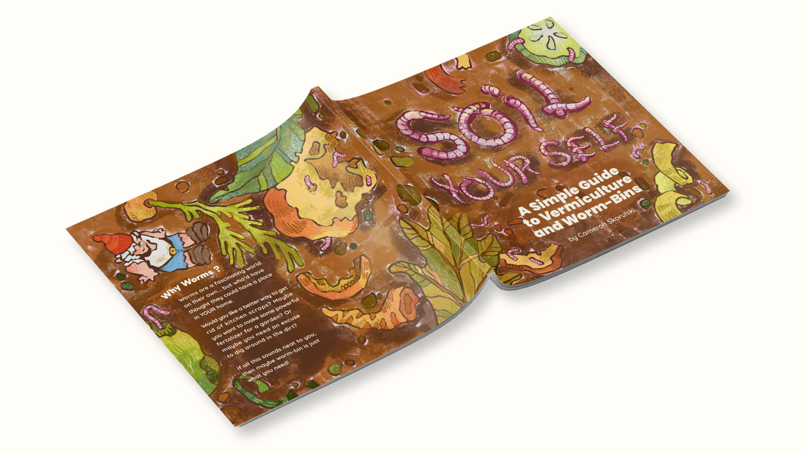
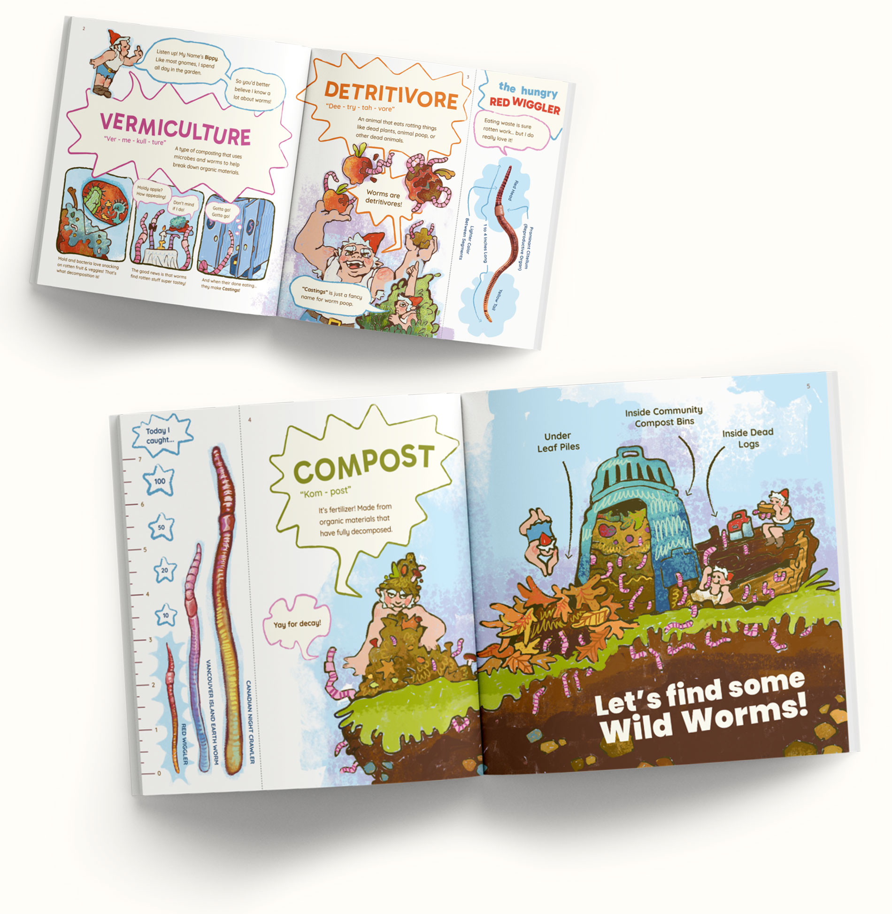
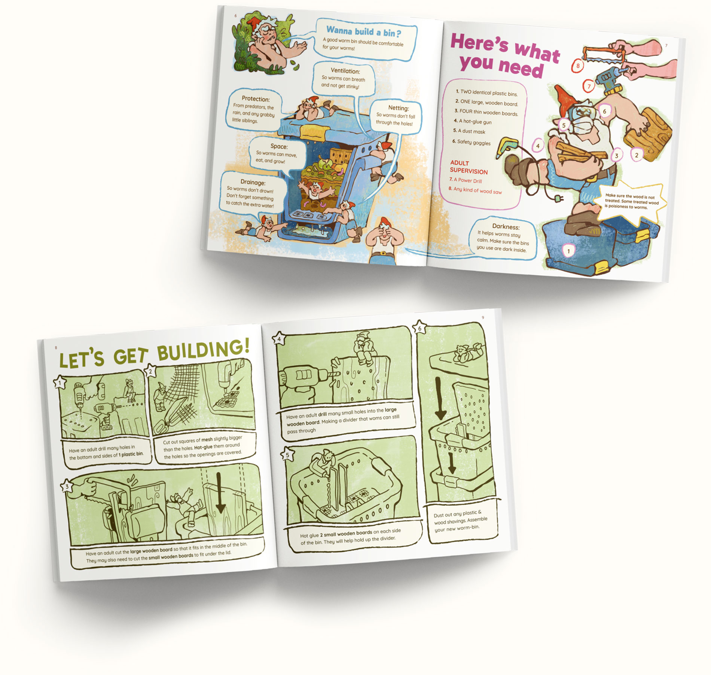
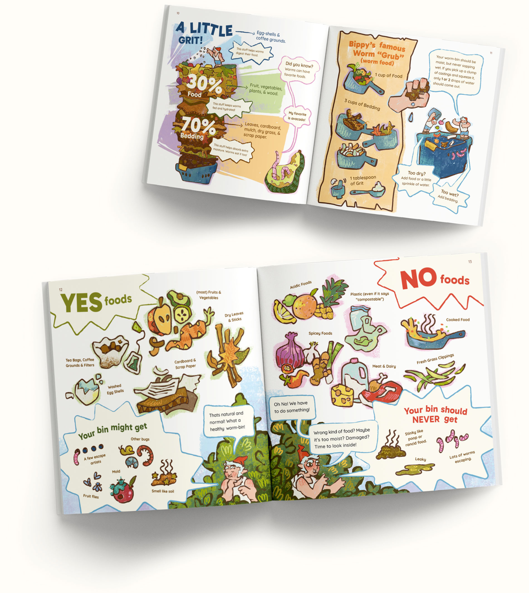

Illustration . Editorial Design
Mentor
Stacey Hamilton
Traditional gym culture is rife with competition, strict body ideals, and heteronormativity. It's no wonder why so many queer and gender-diverse people do not feel welcome in these spaces.
Over the course of collecting primary research with queer and gender-diverse individuals, we identified key themes that contribute to gym intimidation (or “gym-timidation”). Fear of judgement, exclusion, and an overall lack of visible community, stand as barriers between a desire to exercise and the ability to form a consistent workout routine. We wondered... how can we make a gym for the gym-curious? For those who want to take their health into their own hands... but at their own pace? For those who may be seeking a physique that affirms their gender... without forcing them into a box? For those who seek community... without prying eyes? For those with a rocking body... of any shape or size? With these insights and inquiries, we devised Fruition Movement. A gym for all, but designed first and foremost with queer and trans-bodies in mind.



